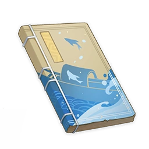

Liyue · Books & Literature
String of Pearls
This five-volume Liyue opera script follows fisherwoman Zixin and dock-worker Fan Jie from a lost necklace to a betrothal, with Grandma Zhang as the comic narrator and Yun Jin named as the performer. The script’s author is not identified.

An opera script, not a history book
The five volumes are organized as five acts, with role headings, entrances and exits, stage directions, and musical-tempo markings. Those features identify the work as a performance script within Liyue’s theater culture.
Grandma Zhang breaks the fourth wall to tell the audience it is watching a Yun Jin play. The text therefore identifies Yun Jin as the performer; it does not establish her as the script’s author.
Acts I–II: the lost pearls and the search
Zixin, a sixteen-year-old fisherman's daughter, works to support her aging parents. She drops the string of pearls she habitually wears while selling fish. Fan Jie, a dock-worker leader, returns it after recognizing the marks on Zixin’s wrist, but she mistakes his explanation and scolds him before he can give his name.
Grandma Zhang suggests a reward for the man who returned the pearls. Three small-time grifters try to claim it with fake finds; Grandma Zhang turns their schemes against them, and they eventually bring the real Fan Jie back. Zixin apologizes, and Grandma Zhang reveals the play’s connection to Yun Jin.
Acts III–V: an abduction and a dark-room rescue
Fan Jie and Zixin meet again and fall in love. Wu Wang, a local bully, learns that Zixin is unmarried and orders his companions to abduct her. Grandma Zhang addresses the audience again and gives Fan Jie the pearls to strengthen his resolve.
At Wu Wang’s stronghold, Zixin strikes him with a candle holder and searches for a way out in the dark. Fan Jie arrives, and the confusion becomes a comic exchange before he recognizes Wu Wang and kills him. The final duet ends with the pearls returned and the lovers betrothed.
The string is ordinary jewelry
The pearls are a lost bracelet or necklace that identifies Zixin by the marks it leaves on her wrist. In Act II, fake Glaze Lily and Noctilucous Jade finds are props in a comic scam, not clues to older Liyue cosmology.
Despite the title, the play is a contemporary street romance in Liyue Harbor. It does not describe the Geo Archon, adepti, the Crux Fleet, or ancient history.
Performer named, author not named
Grandma Zhang’s asides explicitly mention Yun Jin’s plays and tell the audience it has come to see a Yun Jin performance. This anchors the script in the play’s in-world theatrical setting.
No volume provides a writer’s name. The collection should therefore be catalogued as an anonymous opera script associated with Yun Jin’s performance, rather than credited to her without evidence.
This is an original CoreGG reading guide, not an official HoYoverse article or a reproduction of the game text. Source links below identify the records used so you can check the original context.
Sources & references
Check these sources for the original game text and reference trail.